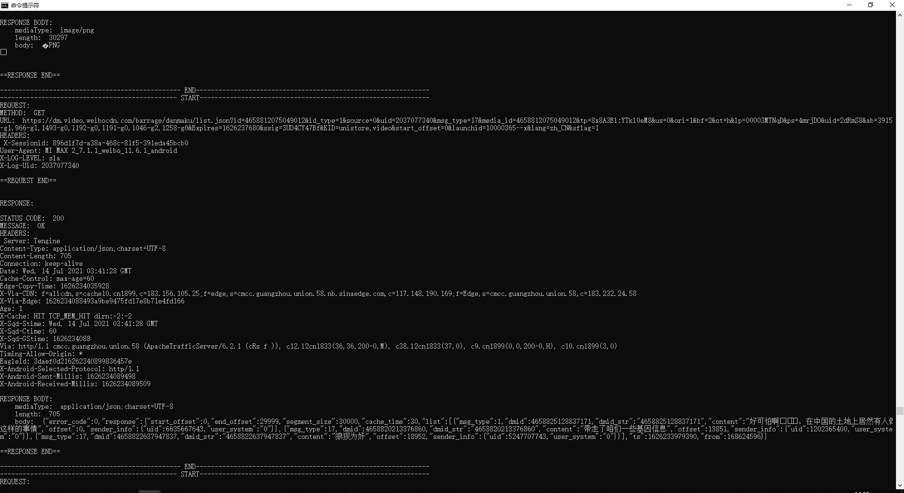
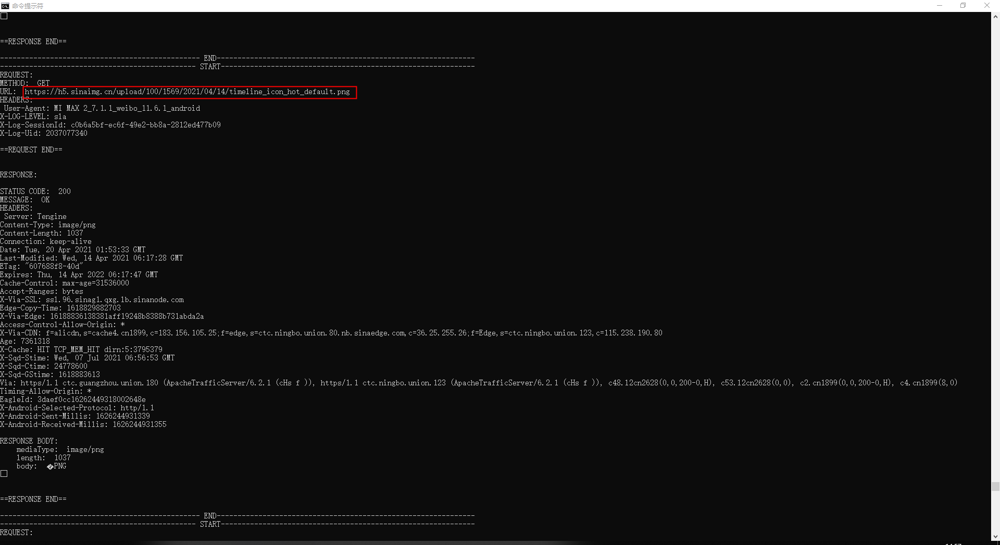

通过分析APP代码找到它的通信方法也可，但是只可一点点。也就是说，每个APP都不一样，需要针对每个APP单独分析，各种框架，各种接口。想要找到一个通用方法抓取http包，就需要从Android系统源码入手。
在Frida Hook Android APP笔记（三）中，已经找到HttpURLConnection的具体实现类为com.android.okhttp.internal.huc.HttpURLConnectionImpl，并且已经
阅读源码能够发现通信过程与服务端的connect、disconnect、getRequestBody、response等等过程都需要通过HttpEngine对象实现。该类在源码中的路径为：external/okhttp/repackaged/okhttp/src/main/java/com/android/okhttp/internal/http/HttpEngine.java。
HttpEngine类的关键代码：
1 | public final class HttpEngine { |
进行网络通信时，首先需要初始化HttpURLConnection对象，进行一系列配置，之后调用connect()方法。connect()方法在HttpURLConnectionImpl中的实现如下：
1 | public final void connect() throws IOException { |
可以看到，先调用initHttpEngine();初始化httpEngine对象，然后调用execute(boolean readResponse)方法，此方法负责发送request和读取response。我们把hook的点选在这里，执行完原方法之后，直接获取HttpURLConnection中的httpEngine属性。
1 | var HttpURLConnectionImpl = Java.use('com.android.okhttp.internal.huc.HttpURLConnectionImpl'); |
获取到httpEngine之后，就可以获取request和response了。可以通过上面getFieldValue方法根据变量名获取变量值，也可以直接调用HttpEngine中的方法。示例代码如下：
1 | var userRequest = getFieldValue(httpEngine, "userRequest"); |
在获取response时，需要先调用readResponse()方法，flush需要处理的request，并解析response header和body。否则，userResponse就是null。
到这里我们已经获取到Request和Response对象了，后续只需解析它们就可以了。从HttpEngine类点进去找到Request和Response路径：
- external/okhttp/repackaged/okhttp/src/main/java/com/android/okhttp/Request.java
- external/okhttp/repackaged/okhttp/src/main/java/com/android/okhttp/Response.java
PS：测试时发现，由于request和response是异步的，最终呈现时request和response不能一一对应。因此，将request的获取从httpEngine改为从Response。
解析request和response的代码：
1 | function parseResponse(userResponse){ |
结果呈现：

完整代码后续会放在github上。
关于https：
在Frida Hook Android APP笔记（三）中，我们已经分析过，具体到通信过程HttpsURLConnectionImpl使用的是HttpURLConnectionImpl对象，只不过另外增加了一些安全验证方法。具体代码如下：
HttpsURLConnectionImpl初始化：
1 | public final class HttpsURLConnectionImpl extends DelegatingHttpsURLConnection { |
DelegatingHttpsURLConnection类的关键方法：
1 | abstract class DelegatingHttpsURLConnection extends HttpsURLConnection { |
因此，https抓包就不需要再做额外配置了。
